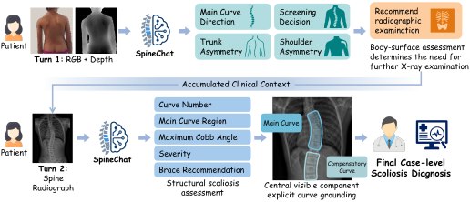
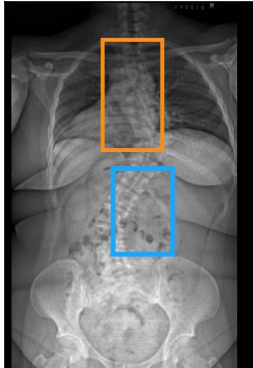
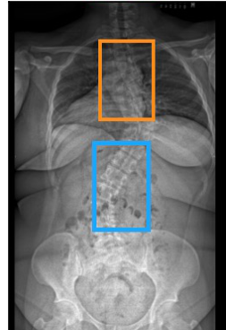
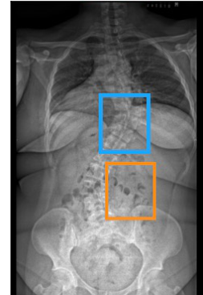
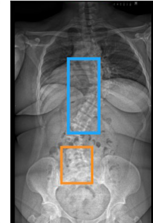
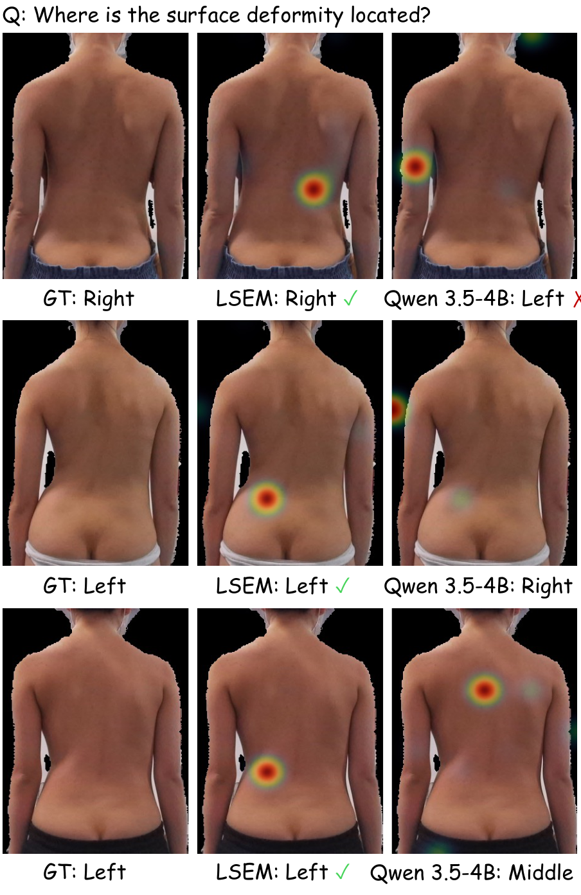

Find localized cues
Recover concept-specific body-surface evidence from paired RGBD observations.
Department of Orthopaedics and Traumatology · The University of Hong Kong
Spinal deformity assessment progresses from body-surface screening to radiographic evaluation. SpineChat connects these stages in a multi-turn multimodal framework, recovering localized surface evidence, grounding individual spinal curves, and regulating the influence of earlier findings as radiographic evidence becomes available. SpineVQA pairs body-surface RGBD observations with whole-spine radiographs and structured clinical annotations.
The two-turn clinical workflow: paired RGBD screening establishes the initial clinical context, followed by radiographic structural assessment and explicit curve grounding.

Compare curve localization across methods on the same radiograph. Blue marks the major curve; orange marks compensatory curves.




Scroll horizontally to view all methods. The case buttons above update every method together. Results reproduced from Figure 5 of the manuscript.
Localized body-surface cues support the initial screening stage. The paper compares LSEM evidence with a final-layer model representation.

Recover concept-specific body-surface evidence from paired RGBD observations.
Maintain instance-specific evidence for coexisting major and compensatory curves.
Regulate the influence of surface findings using their reliability and new structural evidence.
Reference implementation ↗ · SpineVQA
Public paper links and dataset access details will be added progressively.